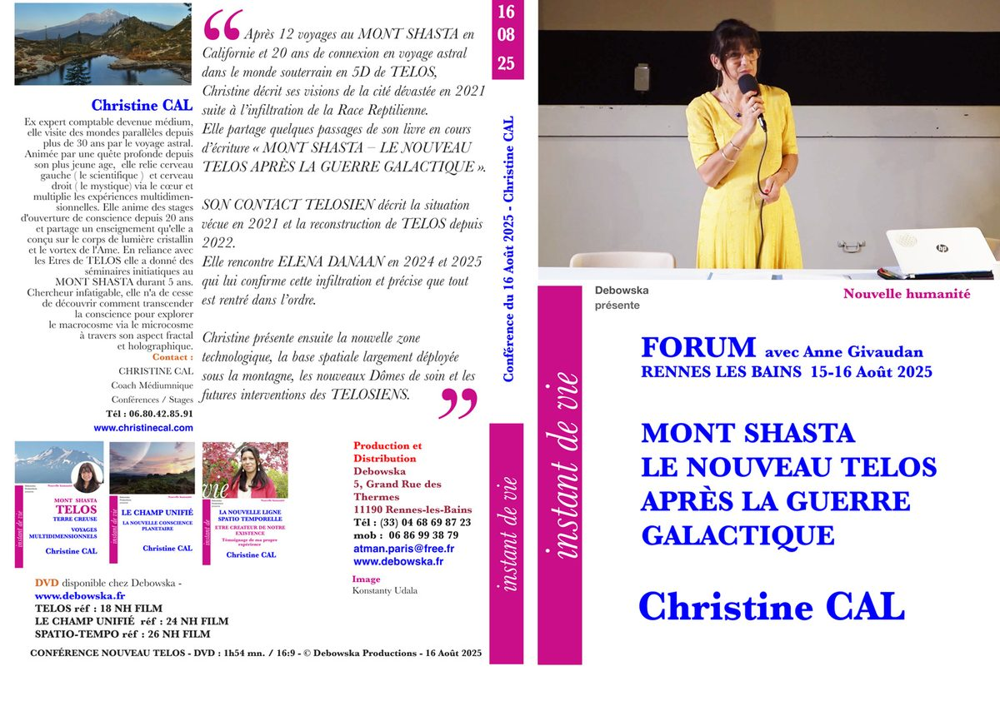
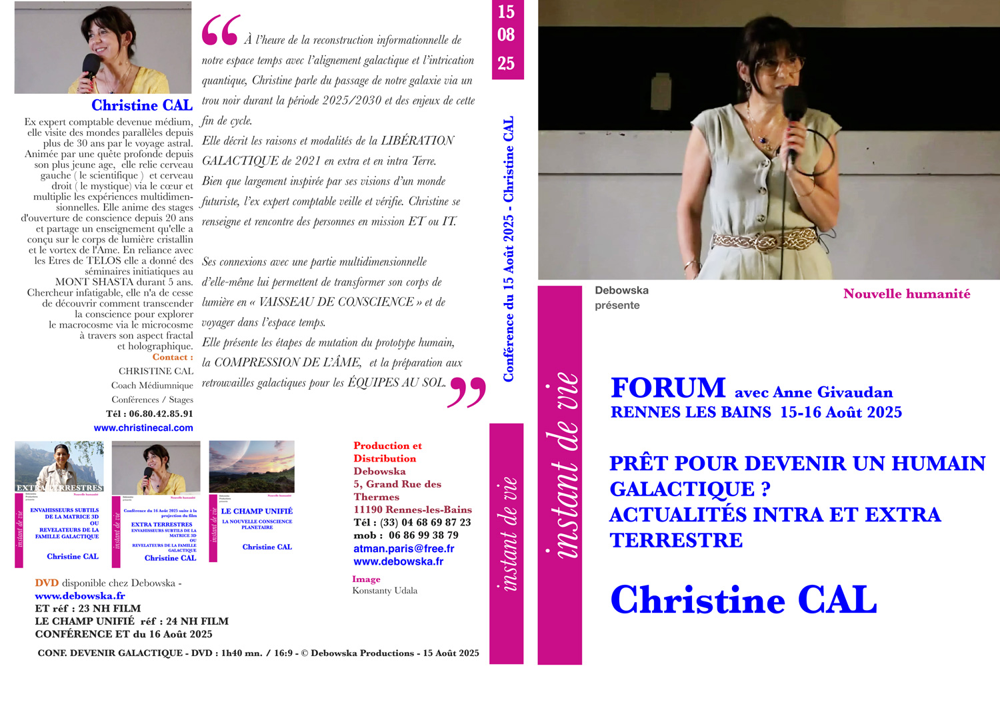
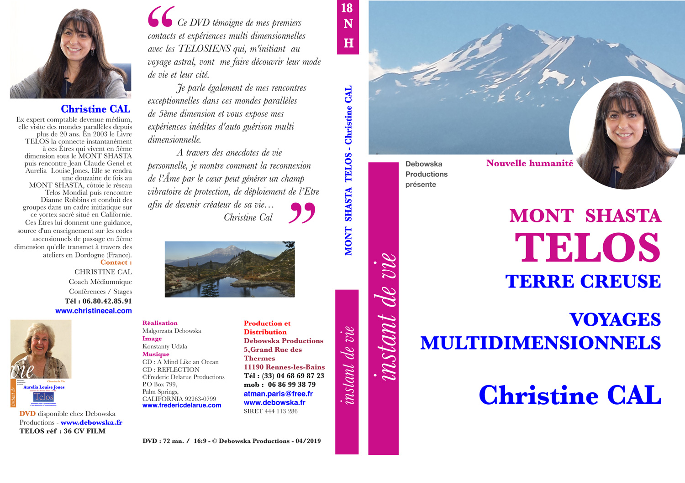

Conf 16/08/2025
Voyages & TELOS
Le Mont Shasta et le Nouveau TELOS
12 voyages au Mont Shasta depuis 2004 et plus de 20 ans de connexion en voyage astral dans le monde souterrain en 5D de TELOS.
Le Mont Shasta — Terre sacrée, vortex de 5ème dimension
Le Mont Shasta, montagne de 4 300 m d'altitude située en Californie, fut la Terre sacrée des Amérindiens et porte aussi le souvenir de la Lémurie. Ce lieu est source de légendes, de visions extraordinaires, de phénomènes et de rencontres hors normes depuis le XIXème siècle.
Sous le Mont Shasta vivent des Êtres passés en 5ème dimension de conscience, dans une ville intraterrestre : TELOS, qui signifie « Communication avec l'Esprit » et capitale de l'Agartha. Le Mont Shasta constitue à ce titre le vortex de 5ème dimension de la Terre.
En 2003, le livre TELOS (Tome I) d'Aurelia Louise Jones et Dianne Robbins vient ranimer le souffle de sagesse lémurienne à travers la révélation de survivants de la Lémurie sous le Mont Shasta. Dès les premiers mots, je m'aperçois que ce livre est encodé énergétiquement et s'adresse à mon Âme, réveillant des mémoires qui lui sont propres. Je suis profondément émue. Quelques jours plus tard, un Être particulièrement grand m'apparaît dans le plan éthérique : il m'initie aux voyages astraux, je visite la cité de TELOS et reçois des enseignements.
Un lieu inédit, source d'expériences d'expansion de conscience
Depuis 2004, je me suis rendue sur ce lieu plus d'une quinzaine de fois. Bien que mystique, l'ex-expert-comptable que je fus me conduit toujours à procéder à quelques vérifications — « c'est à son fruit que l'on reconnaît l'arbre ». Des recherches et lectures de témoignages confirment mes perceptions et mes connexions.
De magnifiques lenticulaires au tracé parfois parfait surplombent la montagne. De nombreux témoignages de campeurs ou de volcanologues dans les années 1960-70 relatent avoir vu des Êtres grands et blonds assis en cercle qui ont disparu instantanément.
Au Mont Shasta, les photons et le prana d'énergie particulièrement intense permettent des expériences d'expansion de conscience inédites. Il est des lieux spécifiques sur cette montagne où ma vision médiumnique me permet de voir dans deux mondes à la fois (3D et 5D) et me propulse dans un vécu multidimensionnel.
Paix, reliance mémorielle et extase devant la beauté des paysages permettent de se « dé-couvrir » — tomber les masques et protections de la personnalité — et laissent place à la fluidité du courant de vie de l'Âme qui peut alors se reconnecter au Soi par des bouffées d'éveil qui la relient au Tout.
TELOS — « Se souvenir de son futur »
La science quantique, à travers ses récentes découvertes, nous prouve que le cerveau est capable de perceptions multidimensionnelles, étant lui-même construit à partir de réseaux multidimensionnels.
À l'heure où la planète amorce son passage vers la 4ème puis la 5ème dimension, les anciennes civilisations devenues nouvelles en conscience, ayant déjà réalisé cette mutation, apparaissent énergétiquement et télépathiquement — uniquement (permettez-moi d'insister afin d'ôter des doutes et des incompréhensions) — pour nous accompagner dans ce processus individuel et collectif.
Ces grands frères et sœurs de l'espace-temps de notre soi-disant passé ne seraient-ils pas en fait des modèles pour notre futur ? Ils participent activement au passage de la Terre en 5ème dimension et viennent accompagner l'humanité à partir de leur propre expérience. Ces Êtres attendent depuis des millénaires que la conscience des humains se déploie et que les voiles se lèvent.
Liberté et discernement restent pour moi des valeurs fondamentales.
Mon chemin avec TELOS
2003 — Premiers contacts en voyage astral avec les Télosiens.
2004 — Rencontre avec Aurelia Louise Jones via Jean-Claude Genel.
2017 — Rencontre avec Dianne Robbins et contacts permanents.
2015–2018 — Rencontres internationales avec la Fondation TELOS Mondial.
2014–2018 — Animation de séminaires initiatiques au Mont Shasta.
TELOS
- Channeling avec les Télosiens dont un Grand Sage de TELOS, le Maître ADAMA, et Maîtres Ascensionnés dont le Maître Saint Germain.
- Cérémonie d'Ascension à la Fondation TELOS à Shasta.
- Nombreux stages sur les Rayons ou Flammes Sacrées avec channeling des Maîtres Ascensionnés.
Le Nouveau TELOS — d'après 2021
Fin de la guerre galactique
Nombreux voyages astraux dans le Nouveau TELOS après l'invasion de 2021, confirmée suite à ma rencontre avec Elena Danaan.

Conf 15/08/2025Prêt pour devenir un humain galactique ? — Actualités intra et extra terrestre

DVD 18 NH · 04/2019Mont Shasta — Terre Creuse — Voyages multidimensionnels
Rencontres initiatiques en Dordogne
Pour toute information sur les prochaines rencontres :
Stage initiatique — Accéder à sa multidimensionnalité
À partir de documents secrets de Sharula Dux et de l'enseignement des Télosiens.
Voyages en expansion de conscience ou voyage astral
Les témoignages des participants seront intégrés ici prochainement.